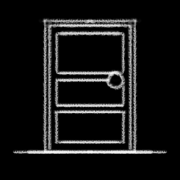
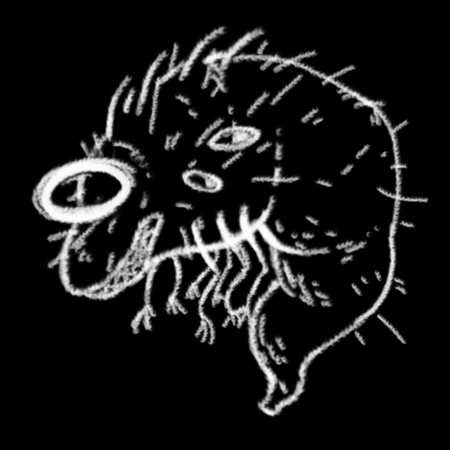
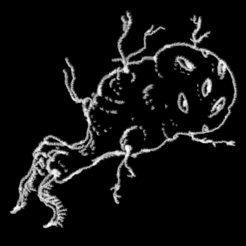
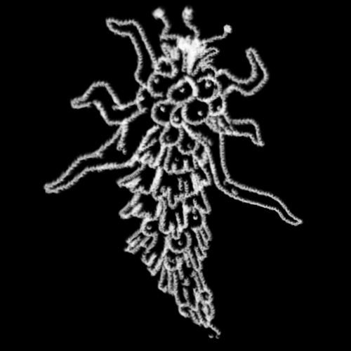
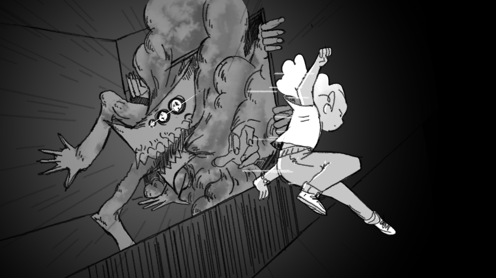

GoetIA
GoetIA

Segadores
Se dice que lo único que puede habitar La Gran División son los Segadores, extrañas entidades capaces de transportar las Almas entre los mundos. Estas entidades poseen curiosas e insólitas habilidades que les permiten reajustar el tejido del universo mismo. A pesar de esto, no son seres perfectos, y su capacidad de afectar nuestro mundo, Assiya, es muy limitada.
Los Segadores interactúan directamente con ambos mundos a través de Puertas, lugares específicos que atraen a las Almas, en que los planos se mezclan con la Gran División.

Santiago está repleto de estos lugares, pero no siempre suelen estar abiertos, y no siempre suelen estar donde mismo. Así como los Segadores actúan de manera irracional para la mente humana, las Puertas parecieran seguir algún designio indescifrable.A la fecha sólo se han identificado 16 Segadores, reconocibles por sus aparentes personalidades y apariencias únicas y distinguibles. Algunos afirman eso sí, que el segador es sólo uno, y que adopta diferentes formas para poder interactuar con este mundo plagado de objetos físicos y conciencias.
Parásitos
|
  |
En ocasiones, fragmentos del otro lado se cuelan entre los mundos y llegan a Assiya; seres del Inframundo que no respetan las leyes ni la lógica de este plano. Pequeños parásitos que, a primera vista, no parecieran ser hostiles. Sin embargo, intentar comprender el real propósito de sus diseños resulta imposible. Pueden hallarse en las sombras, en oscuros callejones, detrás de las luces de neón, o incluso entre los adoquines de la calle misma. Un parásito no presentan un riesgo inmediato, pero si es síntoma de que algo está fallando en sus cercanías. Si se dejan sólos, crecen y se esparcen a espacios aledaños, debilitando la separación entre los mundos, atrayendo cosas aún más peligrosas; una Infección. |
 
|
Infecciones
Estas entidades, provenientes de Kahil, son el epítome de la corrupción y el antagonismo hacia la vida. A simple vista, pueden parecer deformidades errantes, pero cada Infección está compuesta de una materia oscura y viscosa que se retuerce en formas inhumanas, como si el inframundo inerte estuviera intentando manifestarse en el mundo de la acción.

Cada Infección es única, adaptándose a su propio propósito y lugar de anidación. Su apariencia es un reflejo del misterio y la aridés que proviene del otro lado. A menudo se presentan con extremidades múltiples, rostros sin ojos que emiten susurros en la conciencia de quienes los observan, o cuerpos que parecen estar en un estado perpetuo de descomposición. Donde quiera que se arrastren, dejan un Rastro de corrupción a su paso: las plantas se marchitan, el aire se vuelve espeso y tóxico, y la misma realidad parece enconarse bajo su presencia.
Pese a su apariencia inestable y grotesca, las Infecciones son peligrosamente rápidas y sorprendentemente inteligentes. Están impulsadas por un instinto insaciable de descomponer y consumir lo que es puro, desacrando nuestro mundo. Si no se les enfrenta, hacen que la realidad sufra una sepsis, dañándola casi irreversiblemente. Son una amenaza constante, y su mera presencia es un peligro para la vida misma.
Aquelles que enfrenten a las Infecciones deben estar preparades no sólo para combatir su fuerza física, sino también para resistir la desesperación y la corrupción que traen consigo.